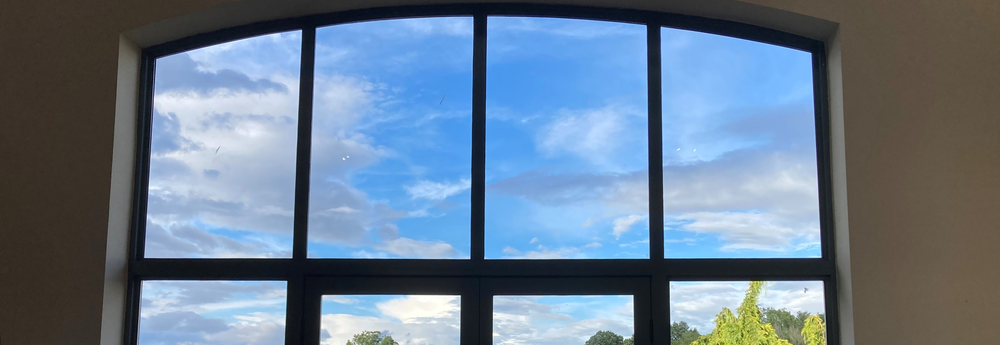

Where Have the Buzzards and Red Kites Gone?
A quiet, birdless morning after the summer's weather finally breaks gets us thinking about the buzzards and red kites who share our skies, how to tell them apart, and what a scattering of feathers can tell you.
Read the Post